1972
1973
1973
1979
1979
1979
1982
1983
1985
1987
1988
1989
The Nike Cortez was first designed by Nike co-founder Bill Bowerman, aiming to produce a comfortable and durable running shoe for distance training and road running. The Nike Cortez was released at the peak of the 1972 Summer Olympics, and quickly gained interest by the general public.
NIKE CORTEZ
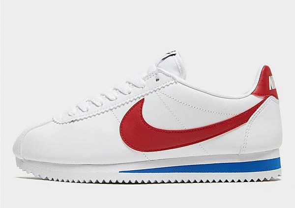
Nike Blazer is a sneaker manufactured by Nike. It was originally released in 1973 as a basketball shoe. Nike, Inc. The Beaverton, Oregon-based brand named the design “Blazer” after its regional NBA team, the Portland Trail Blazers.
NIKE BLAZER
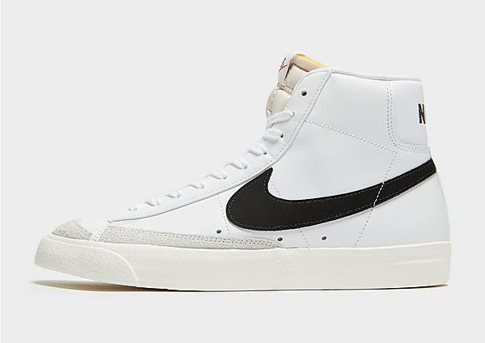
The solution came over breakfast with his wife in the early 1970s, when he realized that the depressions in the form of iron used to make waffles, if inverted, could be an excellent mold for his new running shoe.
NIKE WAFFLE TRAINER
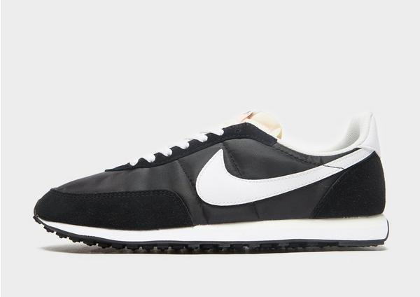
Immediately recognisable as a casual streetwear style, the Nike Daybreak model carries a rich history within its unassuming design. First seen in 1979, the design gained recognition after a custom pair was designed especially for American runner Joan Benoit Samuelson.
NIKE DAYBREAK
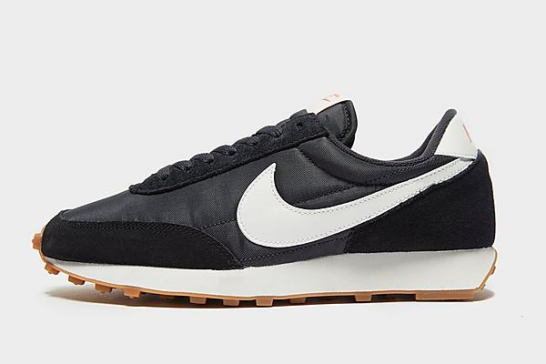
In 1978, Nike released the first shoe that featured the new Air unit technology. The Nike Tailwind was designed with an Air unit hidden in the midsole and saw its first limited release before the 1978 Honolulu Marathon. A successful limited-edition run led to a fully fledged commercial release in 1979.
NIKE AIR TAILWIND’79
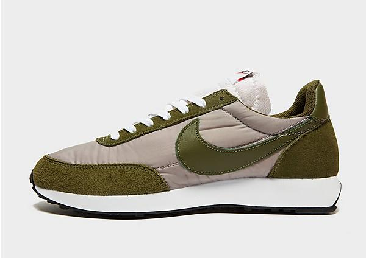
Associated with the infamous 'Waffle Family' of footwear designs released by Nike during the late 1970's, the Nike Challenger has returned for the first time since its '79 debut with modern updates that draw attention to its groundbreaking design which is famous for redefining comfort, breathability and fit for long ...
NIKE CHALLENGER
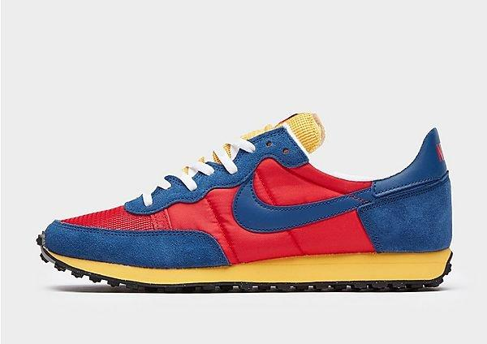
The Nike Air Force 1 was designed by Bruce Kilgore in 1982. The name is a reference to Air Force One, the plane that carries the President of the United States. Nike Air Force 1s were ubiquitous in Harlem, New York, giving rise to the nickname "Uptowns".
NIKE AIR FORCE 1
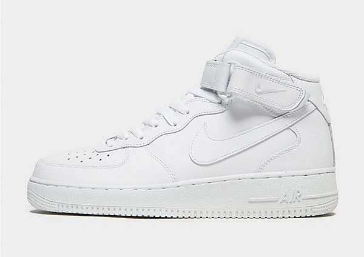
Initially launched in 1983 as the first mid-priced running shoe with Air technology, Pegasus shoes stayed on shelves until 1998. After a reimagining of the concept, Nike released them again in 2000, and by 2018, there were more than a million pairs of Pegasus shoes sold per month.
NIKE PEGASUS
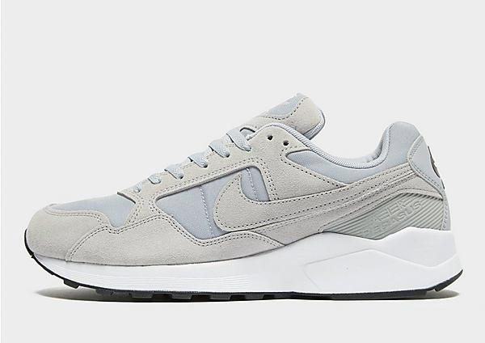
The popularity of Nike Dunks can be traced back to the early 1980s when Nike first released the original Dunk basketball shoe. It was largely marketed to large college basketball programs with strong branding and rabid fan bases. The shoe lends itself well to bold colorways that match a school's colors.
NIKE DUNK
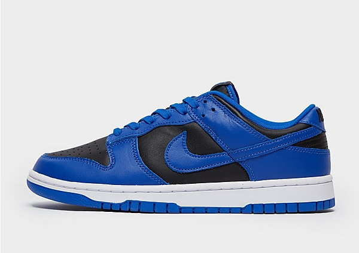
In 1987, the Air Max 1 was born, igniting a love for Nike's iconic cushioning system. It would go on to become one of the most iconic designs in Nike history, and Tinker Hatfield would later cement himself as one of the greatest shoe designers in the world.
NIKE AIR MAX 1
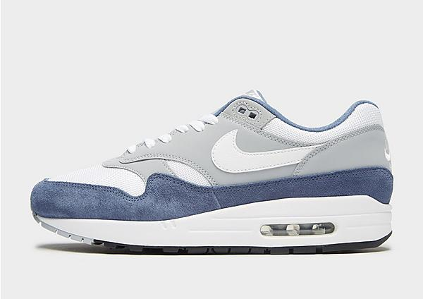
The Nike Air Trainer III was first made available in 1988. Bo Jackson, easily one of the top athletes of all time, endorsed the sneaker. Bo Jackson's popularity in 1988 was massive. Jackson, who played in the MLB and NFL at the same time, was a symbol of athletic excellence.
NIKE AIR TRAINER 3
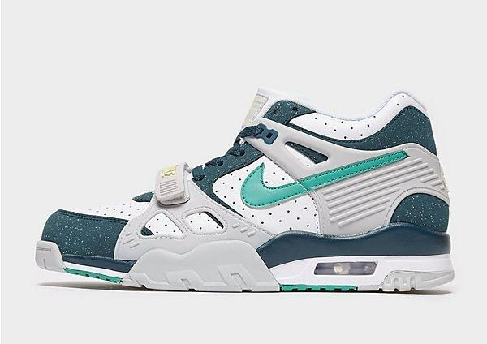
Released in 1989, Nike Air Flight 89 soared as a basketball icon. Its sleek design and top-notch performance won hearts.
NIKE AIR FLIGHT ’89
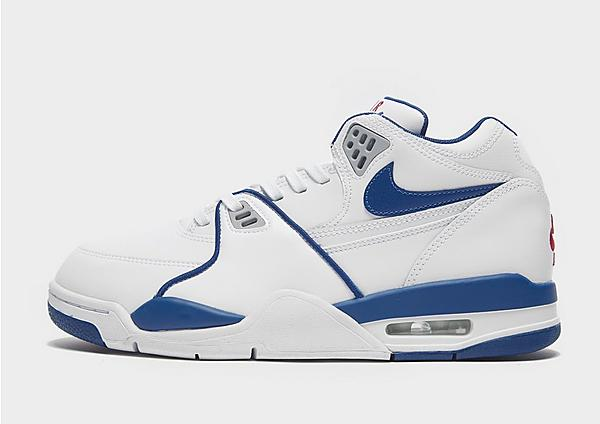